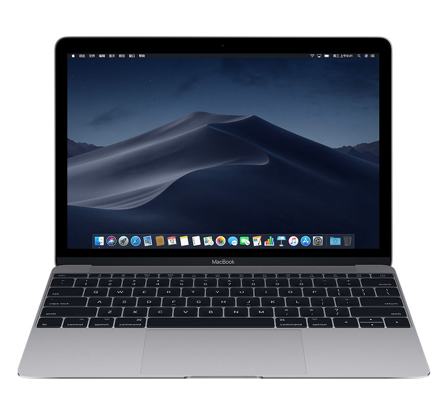
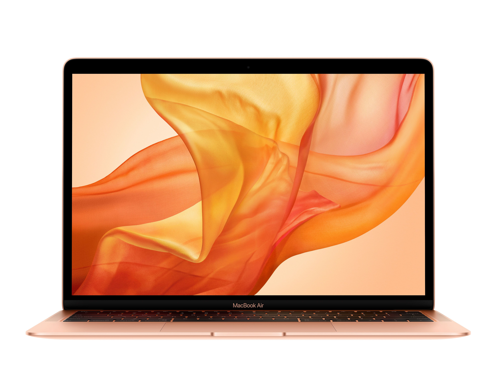
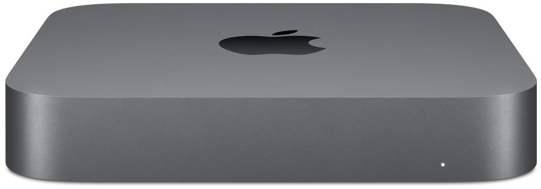
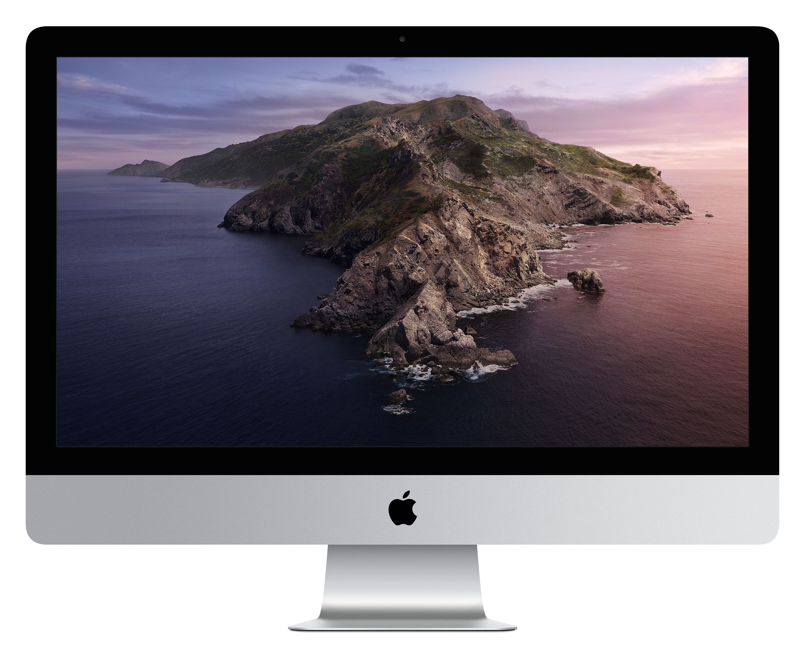
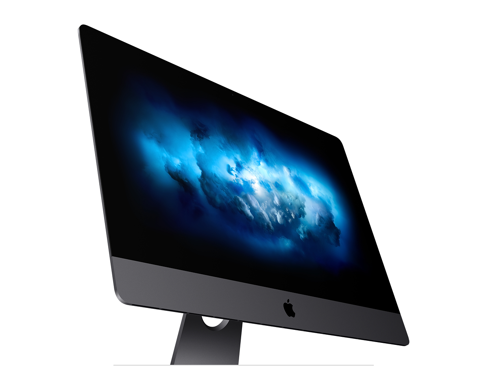
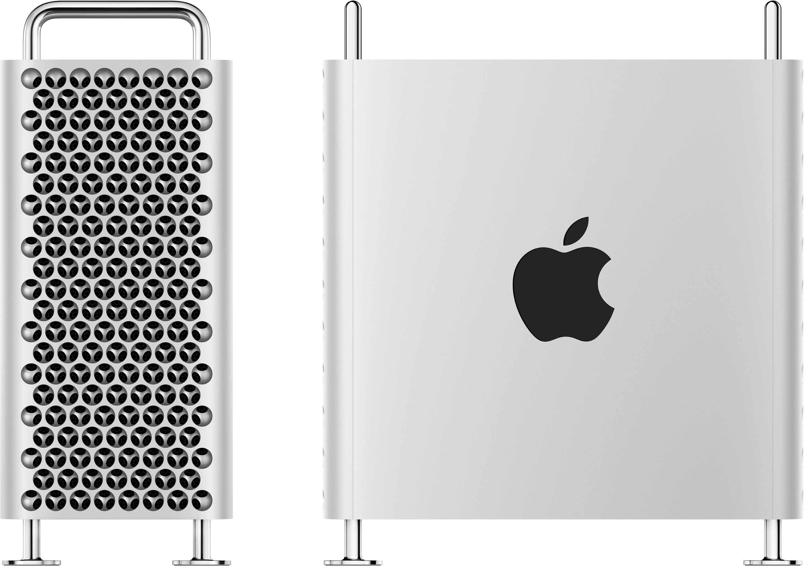

Mac 对比
这部分主要介绍苹果公司的电脑产品，以及我正在使用的设备。
下面的表格是介绍每个产品不同配置的情况（截止至 2019年11月13日）：
| 型号 | CPU(GHz) | 内存(GB) | 存储容量(GB) | 屏幕(寸) | 重量(千克) | 价格(元) |
|---|---|---|---|---|---|---|
| MacBook | 1.2(3.0)*2 | 8 | 256 | 12 | 0.92 | 买不到了 |
| MacBook Air | 1.6(3.6)*2 | 8 | 128 | 13 | 1.25 | 8899 |
| MacBook Pro 13 | 1.4(3.9)*4 | 8 | 128 | 13 | 1.37 | 9999 |
| MacBook Pro 13 | 2.4(4.1)*4 | 8 | 256 | 13 | 1.37 | 13899 |
| MacBook Pro 16 | 2.6(4.5)*6 | 16 | 512 | 16 | 2.0 | 18999 |
| MacBook Pro 16 | 2.3(4.8)*8 | 16 | 1024 | 16 | 2.0 | 22199 |
| Mac mini | 3.6*4 | 8 | 128 | 无 | 1.3 | 6331 |
| Mac mini | 3.0(4.1)*6 | 8 | 256 | 无 | 1.3 | 8669 |
| iMac 27 | 3.0(4.1)*6 | 8 | 1024(融合) | 27 | 9.42 | 13832 |
| iMac 27 (定制) | 3.6(5.0)*8 | 8 | 512 | 27 | 9.42 | 21398 |
| iMac Pro | 3.2(4.2)*8 | 32 | 1024 | 27 | 9.7 | 38138 |
| Mac Pro (未发售) | 3.5(4)*8 | 32 | 256 | 无 | 18 | 约4万(5999$) |
注：
- CPU 括号里的数字为 Turbo Boost 以后的频率，后面乘的数字代表核数
- iMac 不定制只能买到非固态硬盘
- Mac Pro 暂未发售
详细信息请查看官网：
下面让我们详细介绍这几个型号，以及我的体验和想法。
MacBook

从上面的表格可以看到，MacBook 的 CPU 频率是很低的，这是因为没有风扇，所以 CPU 功率非常低。这款笔记本的主要优势在于便携，重量只有 0.92千克，是苹果最轻的笔记本。它非常适合出差的时候带上。用苹果的话说就是“身薄力不薄”，用俗话说就是麻雀虽小五脏俱全。
写代码的体验上来说，使用起来除了屏幕小，没有缺点，因为代码都是远程执行的，所以它只负责显示代码，进行代码提示，把修改过代码推到服务器上即可。我甚至用它跑过 Windows 虚拟机，除了慢一点，没有任何其他问题。
需要注意的是，它只有一个 USB-C 口。
此款是我的旅行必备。
2019年注：此款已经不卖了，可以购买 MacBook Air。
MacBook Air

MacBook Air 的价格比 MacBook 便宜一点，性能比 MacBook 好一点，但是重量重一点，多一个 USB-C 口，然后就没有其他的优势了。即使是 MacBook Pro 的双核入门款，重量与 MacBook Air 差不多，CPU 却好了不少，所以我没有买过这一款。
MacBook Pro
如果是学生党，主推 MacBook Pro。
从表格中可以看到，从一万到两万都有的选，性能也从 2 核到 8 核，差了几倍。一般来说还是选能买得起的最贵的型号比较好，一步到位免除后患。
当你使用 PyCharm 写代码的时候，代码提示、Debug 下断点以及 Debug 变量内容的显示都会比较耗费CPU，尽可能买一个速度快的电脑能够节省生命。
正常操作系统开机以后都会占用 6GB 左右的内存，PyCharm 默认消耗 750MB内存，不过我使用的时候通常会内存不足，所以我会调到 2GB，这样就会用光 8GB 内存，因此选择 16GB 内存是比较充裕的。
个人觉得如果不放数据集，硬盘选 256GB 是够用的。如果你作为主力机使用，除了写代码还需要放电视剧、照片、手机备份等文件，那么最好按照自己的使用习惯去选择合适的容量。
我重度使用过 13寸和 15寸的型号。
Mac mini

此款上班族可以考虑，它的价格便宜，性价比却很高，八千的价格可以比得上一万八的 MacBook Pro 的性能，不过我没有买过，所以不做过多的评论了。
iMac

这是我最喜欢的 Mac，因为它的屏幕特别大，分辨率也高（5K），非常适合写代码。我买的是定制的 1TB固态硬盘，另外升级 CPU 为 i7。现在买的话，能够升级到 i9，性能比我正在使用的这台好得多，十分推荐。
内存条可以在网上购买，自行安装，非常方便，这里不建议升级。
硬盘强烈建议选固态硬盘，极大提升各大 APP 的启动速度以及响应速度。
鼠标不推荐，建议选触控板，熟练使用触控板可以高效进行各种操作，比如拖拽、多选、切换应用和屏幕等。
iMac Pro

性能更好了，但是价格也翻倍了，性价比不高。对于深度学习来说没有更大的优势，不过如果不计成本又喜欢黑色的话可以选择这款。
Mac Pro

性能很强大，但是现在买不到，单看低配版的性能比不过 iMac 定制版。
如果选配更高级别的配置，比如加个 Radeon Pro Vega II Duo，据说有 14TFLOPS 的性能，或许可以直接跑深度学习，但是是 A 卡，可能需要踩坑。等到 CoreML 能训练模型的时候，或许可以买一个试试看。
总结
学生党按预算选择买得起的最好的 MacBook Pro，有固定工位的学生或上班族可以考虑买 iMac 或者 Mac mini，追求轻便可以选 MacBook。
最佳搭配是家里放一台 iMac，出门使用 MacBook，使用 iCloud 进行设备之间的文件同步。